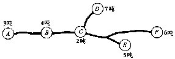
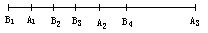

习题十三
1.某乡共有六块甘蔗地，每块地的产量如下图所示.现在准备建设一座糖厂，问糖厂建于何处总运费最省？

2.产地A1、A2、A3和销售地B1、B2、B3、B4都在铁路线上，位置如下图所示.已知A1、A2、A3的产量分别为5吨、3吨、2吨；B1、B2、B3、B4的销售量分别是1吨、2吨、3吨、4吨.试求出使总运输吨公里数最小的调运方案。

3.把长239米的钢筋截成17米和24米长的钢筋，如何截法最省材料？
4.钢筋原材料每件长7.3米，每套钢筋架子用长2.9米、2.1米和1.5米的钢筋各1段.现在需要绑好钢筋架子100套，至少要用去原材料几件？截料方法怎样最省？
5.某车间有铣床3台，车床3台，自动机床1台，生产一种由甲、乙两个零件组成的产品.每台铣床每天生产甲零件10个，或者生产乙零件20个；每台车床每天生产甲零件20个，或者生产乙零件30个；每台自动机床每天生产甲零件30个，或者生产乙零件80个.如何安排这些机器的生产任务才能获得最大数量的成套产品？每天最多可生产多少套产品？